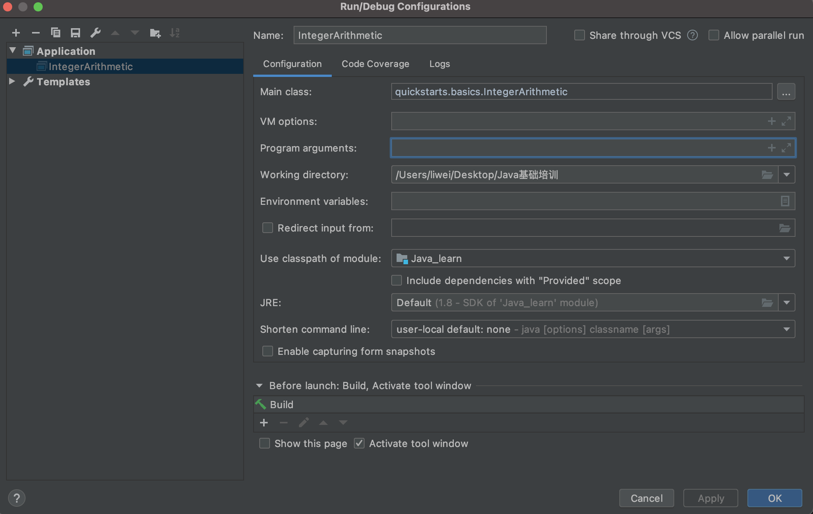

命令行参数
Java程序的入口是 main 方法，而 main 方法可以接受一个命令行参数，它是一个 String[] 数组。
这个命令行参数由 JVM 接收用户输入并传给 main 方法：
public class Main {
public static void main(String[] args) {
for (String arg : args) {
System.out.println(arg);
}
}
}
java 执行并传递命令行参数
我们可以利用接收到的命令行参数，根据不同的参数执行不同的代码。例如，实现一个 -version 参数，打印程序版本号：
public class Main {
public static void main(String[] args) {
for (String arg : args) {
if ("-version".equals(arg)) {
System.out.println("v 1.0");
break;
}
}
}
}
上面这个程序必须在命令行执行，我们先编译它：
javac Main.java
然后，执行的时候，给它传递一个-version参数：
java Main -version
IDEA 配置命令行参数
如果一个类有 main （即有入口方法，可以执行），可以通过为其配置 Run/Debug Configuration，然后在右侧箭头的Program arguments 里输入参数，不同参数用空格隔开。

小结
- 命令行参数类型是
String[]数组； - 命令行参数由 JVM 接收用户输入并传给
main方法； - 如何解析命令行参数需要由程序自己实现。